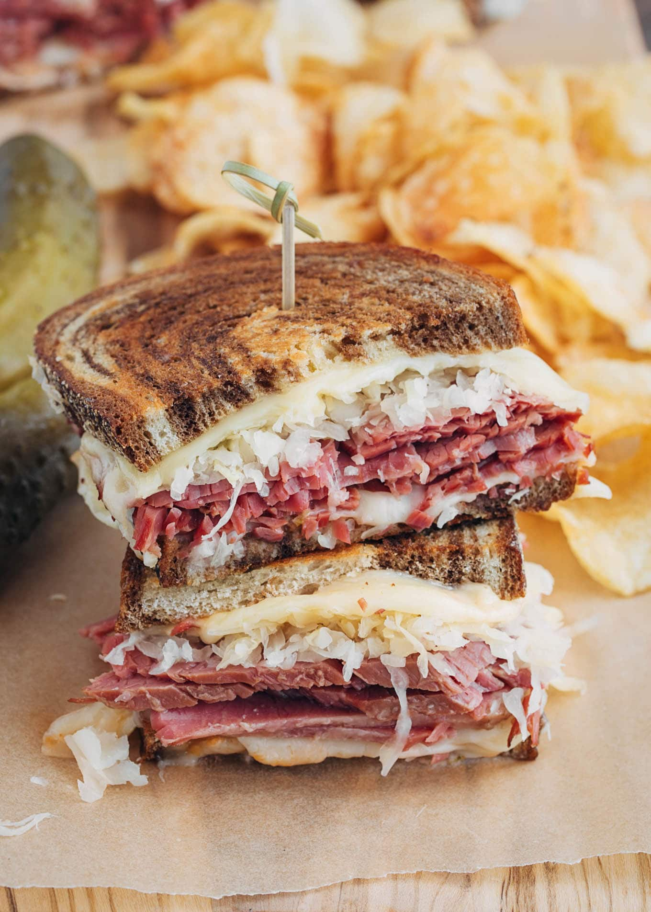

Reuben Sandwich

Description
The reuben grilled sandwich is sure to become a family favorite.
Ingredients
- 8 slices rye bread
- 1/2 cup Thousand Island dressing
- 8 slices Swiss cheese
- 8 slices deli sliced corned beef
- 1 cup drained sauerkraut
- 2 tablespoons softened butter
Steps
- Preheat a large griddle or skillet over medium heat
- Spread Thousand Island dressing evenly across one slice of bread. On four bread slices, layer one slice Swiss cheese, 2 slices corned beef, 1/4 cup sauerkraut, and another slice of Swiss cheese. Top with remaining bread slices, dressing-side down. Butter the top of each sandwich.
- Place sandwiches, butter-side down on the preheated griddle. Butter the top of each sandwich with the remaining butter. Grill until both sides are golden brown, about 5 minutes per side.